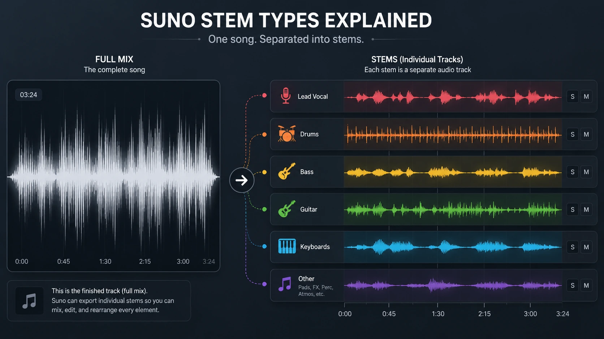
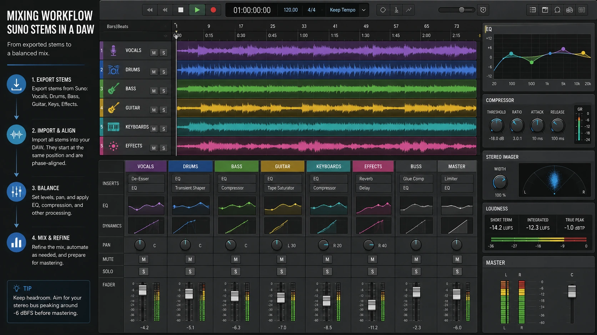

Generating a complete song with Suno is fast.
Finishing that song properly is where the real work begins.
A generated track may have a strong chorus, a convincing vocal and an arrangement that is almost ready to release. Then I notice that the vocal is buried, the bass is overpowering the kick, the snare feels too distant or one instrument is taking up half the mix like it pays rent there.
When everything exists inside one finished stereo file, the options are limited.
I can apply EQ, compression and mastering to the complete song, but every adjustment affects everything else. Brightening the vocal also brightens the cymbals. Reducing muddy guitars may thin out the snare. Pulling down the bass can remove weight from the entire track.
Stem separation changes that.
Suno’s updated stem tools can divide a song into separate musical elements that can be placed on individual tracks, adjusted independently and exported into a traditional digital audio workstation.
That does not automatically turn an AI-generated song into a professional multitrack recording.
It does give me a much better chance of treating it like one.
What a stem actually gives you
A stem is an isolated musical element or grouped part of a finished song.
Depending on the separation mode and the music itself, that might include:
- Lead vocals - Backing vocals - Drums - Bass - Guitar - Keyboards - Synthesizers - Strings - Brass - Woodwinds - Percussion - Sound effects
Once those parts are separated, I can change their volume, pan position, EQ, compression and effects without applying the same treatment to the entire mix.
I can also mute parts completely.
That makes it possible to create an instrumental, an a cappella, a performance backing track, an alternate version or a rebuilt mix.
The important thing is understanding that extracted stems are not necessarily the same thing as receiving the original multitrack recording from a studio session.
In a traditional recording project, the kick drum, snare, guitars and vocals were usually recorded or generated on separate tracks before being mixed.
A finished Suno song arrives as a complete stereo production.
Suno says its newer separation system does not simply cut frequencies out of that final mix. Instead, it analyzes the song and regenerates clean versions of the requested parts.
That approach can reduce the watery artifacts and heavy bleed associated with older separation methods.
It also means I would not assume the stems are perfectly identical to the hidden ingredients of the original song. They are reconstructed parts designed to match what was present.
That distinction matters when deciding how aggressively to rebuild the mix.

Suno now offers three ways to separate a song
Suno currently provides Auto Split, Split from Mix and Advanced Split.
Each option solves a different problem.
Choosing the correct one before exporting can save time, credits and a folder full of audio files I never needed.
Auto Split
Auto Split is the quickest option when I want a complete set of basic stems.
It analyzes the song and divides it into as many as 12 broad categories, including vocals, drums, bass, guitar, keyboards and other detected instruments.
This is the mode I would choose when I want to rebuild the overall mix.
It gives me enough separation to adjust the major parts without requiring me to request each instrument individually.
The tradeoff is control.
Auto Split decides how the song should be categorized. It may not always identify every sound exactly as I would, especially when a production contains layered synthesizers, processed instruments or sounds that sit somewhere between categories.
For a quick multitrack starting point, it makes sense.
For extracting one very specific sound, another mode may be better.
Split from Mix
Split from Mix is designed for isolating one selected instrument or voice.
The result includes the extracted part and a companion stem containing everything else.
If I isolate the lead vocal, I receive:
- The vocal - The full song without that vocal
That makes Split from Mix useful for creating:
- Instrumental versions - A cappella vocals - Karaoke or performance tracks - Drumless practice mixes - Bassless practice mixes - Remixes built around one isolated part - Cleaner replacements for a weak instrument
It is also useful when I do not need an entire 12-stem session.
If the only problem is that I want to replace the guitar, there is little reason to separate every other part of the song.
I can extract the guitar, keep the companion mix and decide whether to edit, replace or regenerate that one element.
Advanced Split
Advanced Split provides the most control.
Suno says Premier users can search through a list of nearly 100 instruments and choose exactly what they want to extract.
That is a much more detailed approach than asking for a general strings or percussion stem.
A production might contain violin, cello, tambourine, acoustic guitar, electric guitar and several synthesizer layers. Advanced Split allows the requested stem to be more specific.
This could be useful when:
- One instrument is masking the vocal - A single part needs to be replaced - A sample or performance element is worth preserving - The arrangement contains several similar instruments - A producer wants a clean source for a remix - A specific instrument needs different processing - The original production needs a smaller, cleaner arrangement
Suno also notes that some of the most detailed instrument options are still improving.
That is worth remembering.
A dropdown containing the name of an instrument does not guarantee that every extraction will be perfect. The result still depends on how clearly that sound exists in the mix and how closely it overlaps with other parts.
Pick the split based on the actual goal
I would not begin by clicking the most advanced option simply because it has the most impressive name.
I would begin with the problem.
If I need to rebalance the complete song, I would start with Auto Split.
If I need an instrumental or want to remove one element, I would use Split from Mix.
If I need a very specific instrument, I would try Advanced Split.
That decision prevents unnecessary work.
It also avoids spending time cleaning a dozen tracks when the entire project could have been solved by separating one vocal.
A simple workflow is usually a faster workflow.
Export WAV files when the song is moving into production
Once the stems are ready, I would export them as WAV files for further editing and mixing.
Compressed formats such as MP3 are convenient for listening and sharing, but they are not my first choice for production.
Every round of lossy compression removes information. Additional processing and another final export can make those losses more noticeable.
Suno Studio supports multitrack exports and individual WAV downloads. Its official documentation also says exported stems are time-aligned for use in external DAWs.
That should make the initial setup straightforward:
1. Export the stems as WAV files. 2. Create a new session in the DAW. 3. Set the project sample rate appropriately. 4. Place every stem at the same starting point. 5. Confirm that the tracks remain synchronized. 6. Play them together before adding any processing.
The first listen should be completely dry.
No EQ.
No compression.
No mastering chain doing twelve things because a tutorial said it was “warm.”
I want to hear what the separation actually produced.

Solo every stem and listen for problems
Before rebuilding the mix, I listen to each stem alone.
I am checking for:
- Other instruments bleeding into the stem - Watery or metallic artifacts - Missing notes - Smearing around cymbals - Vocal consonants appearing in other tracks - Unstable stereo movement - Changes in tone between sections - Reverb tails being cut off - Timing differences - Instruments that were categorized incorrectly
A stem does not need to sound beautiful by itself to work in the complete mix.
Drum overheads, backing vocals and effect returns can sound strange in isolation even in traditional sessions.
The better question is whether the stem creates an audible problem when all the tracks play together.
I do not automatically attack every odd sound with processing.
Sometimes the artifact disappears completely inside the arrangement.
Trying to repair an invisible problem can create a very visible one.
Rebuild the balance before adding effects
The most important mixing tool is still the volume fader.
I begin by pulling every stem down and rebuilding the balance from zero.
A simple order might be:
1. Drums 2. Bass 3. Lead vocal 4. Main harmonic instruments 5. Lead instruments 6. Backing vocals 7. Percussion 8. Effects and atmosphere
That order is not a law.
It is simply a useful way to establish the rhythm section, place the vocal and then build the arrangement around them.
I am listening for the center of the song.
In vocal music, that is usually the lead vocal.
In an instrumental track, it might be the main melody, groove or featured instrument.
Once the central element feels clear, everything else needs to support it rather than compete with it.
This alone can improve a generated song dramatically.
The original problem may not have been poor sound quality.
It may have been a guitar that was three decibels too loud.
Treat the vocal like a real vocal
The lead vocal is often the first stem I would examine carefully.
Separating it gives me control over:
- Vocal level - Brightness - Low-frequency buildup - Harsh consonants - Sibilance - Compression - Delay - Reverb - Stereo placement - Automation
I begin with corrective decisions.
If there is unnecessary low-end noise, I can reduce it carefully.
If certain words are harsh, I can use automation, dynamic EQ or a de-esser rather than dulling the entire performance.
If the vocal disappears during the chorus, I can automate it upward instead of compressing every section equally.
I would be conservative with effects.
A separated vocal may already contain reverb or processing from the generated mix. Adding another large reverb can make the performance feel distant very quickly.
The goal is not to prove that I own plugins.
The goal is to hear the singer.
Drums need impact more than complexity
Separated drums can be one of the most useful parts of the process.
They can also reveal some of the hardest artifacts because cymbals, reverb and transients overlap heavily with the rest of a finished mix.
I would first decide whether the extracted drum stem already works.
If it does, I may only need:
- Small EQ adjustments - Gentle compression - A little transient control - Volume automation - Parallel processing - Slight saturation
If the kick lacks impact, I might reinforce it with a subtle sample.
If the snare disappears, I might layer a controlled hit beneath it.
If the cymbals sound watery in isolation but acceptable in the full mix, I would leave them alone.
Replacing every drum because one hi-hat sounds unusual is how a song slowly becomes a completely different song.
Bass should support the song without swallowing it
Bass problems are difficult to solve inside a finished stereo file.
Stem separation makes them much easier.
I can now adjust the bass independently from the kick drum, vocal and guitars.
I listen for:
- Excessive sub-bass - Uneven notes - Mud in the low-midrange - Conflict with the kick - Lack of presence on smaller speakers - Distortion or separation artifacts
Volume automation can often solve more than compression.
If three bass notes are too loud, I would rather reduce those notes than flatten the entire performance.
I can also use sidechain compression carefully if the kick and bass occupy the same space.
The word carefully is doing a lot of work there.
A bass line should move with the song.
It should not sound like someone is repeatedly turning it off whenever the kick appears.
Use EQ to create space, not to redesign every sound
Once the balance works, I begin making small EQ decisions.
I am not trying to make every stem sound huge by itself.
If every track is huge, the mix becomes a storage unit filled entirely with couches.
Each part needs its own space.
I may reduce low frequencies from instruments that do not need them. I may soften a harsh guitar so the vocal can remain clear. I may reduce muddy keyboard frequencies that overlap the bass.
Those changes should make sense inside the complete mix.
Solo mode is useful for finding a problem.
The full arrangement is where I decide whether the solution works.
Some stems may be better replaced than repaired
One of the biggest advantages of separation is not merely processing the original part.
It is being able to remove it.
If the guitar stem contains obvious artifacts or the bass part does not support the arrangement, I can mute it and replace it.
That replacement might come from:
- A newly generated Suno stem - A live recording - A virtual instrument - A MIDI recreation - A sample - Another musician - A completely different arrangement choice
Suno Studio can also generate new musical layers that fit existing audio. Its multitrack environment allows stems to be arranged, edited and supplemented with newly generated parts.
That turns separation into something more useful than cleanup.
It becomes arrangement.
The ability to remove one part and create another is where AI music begins feeling less like a finished vending-machine result and more like editable source material.
Regenerated stems may not perfectly recreate the original mix
Suno says its newer system regenerates requested stems instead of only carving them out of the original audio.
That approach has clear advantages.
It can reduce bleed and produce cleaner individual tracks.
It also creates an important expectation.
Because the stems are reconstructed, I would not assume that combining them will reproduce the original mix perfectly at a sample-by-sample level.
A note may have a slightly different tone. An effect tail may change. A guitar texture may be cleaner but not completely identical. The combined stems may feel close to the original rather than mathematically matching it.
For normal creative mixing, that may be completely fine.
I am usually trying to make a better final version, not win a laboratory test against the original file.
Still, I would keep the original mix inside the DAW as a reference.
That gives me something to compare against whenever the rebuilt version begins losing the character that made the song worth finishing.
Keep the original mix on a reference track
I place the original Suno mix on its own muted track.
Throughout the process, I switch between:
- The original mix - The rebuilt stem mix
I compare:
- Vocal clarity - Bass weight - Drum impact - Stereo width - Energy - Instrument balance - Reverb - Overall tone - Emotional impact
A technically cleaner mix is not automatically a better mix.
I might separate everything, remove every artifact and create a result that is perfectly controlled but completely lifeless.
The original mix may contain a rough interaction between instruments that gives the chorus energy.
The goal is to improve the weak areas without sterilizing the song.
Use mix buses to keep the session manageable
A 12-stem session is not enormous, but routing still helps.
I might create buses for:
- Drums and percussion - Bass - Guitars - Keyboards and synthesizers - Lead vocals - Backing vocals - Effects - Full music - Full mix
Buses make it easier to control related groups.
If the instruments overpower the vocal during the chorus, I can automate the music bus instead of editing six separate tracks.
If the backing vocals need the same processing, I can route them through one shared chain.
Organization becomes more important once alternate versions are involved.
A project containing the main mix, instrumental, vocal-up mix, performance track and social-media edit can become a small audio swamp surprisingly fast.
Naming tracks is not exciting.
Neither is searching for “Audio 17 copy copy final 2.”
Stem separation is especially useful for alternate versions
Once the mix is separated, creating other deliverables becomes much easier.
Possible versions include:
- Full mix - Instrumental - A cappella - Performance backing track - Clean edit - Extended intro - Short social edit - Vocal-up mix - Drumless practice version - Bassless practice version - Music-video edit - Remix stems - Trailer version
For my own creative projects, the music-video edit is especially useful.
A video may need a longer introduction, a cleaner ending or several moments where sound effects can take priority.
With stems, I can reduce instruments beneath dialogue, extend ambience, remove vocals from one section or create a custom ending that matches the picture.
That is difficult when all I have is one finished stereo file.
MIDI extraction creates another path
Suno Studio also supports extracting MIDI from stems.
That can be useful when I want to recreate a melody, bass line or rhythmic part using another instrument.
The generated MIDI will still need to be checked.
Audio-to-MIDI conversion can misread timing, pitches or overlapping notes, particularly with complex material.
But even an imperfect MIDI extraction can provide a starting point.
I can clean the notes, change the sound and rebuild the part using a virtual instrument.
That gives me another option when the audio stem is not clean enough but the musical idea is worth preserving.
What stem separation does not fix
Stem separation is powerful.
It does not repair every songwriting or production problem.
It will not automatically fix:
- Weak lyrics - A boring melody - An arrangement that never develops - Unconvincing emotional delivery - Repetitive chord progressions - Awkward song structure - Incorrect pronunciation - A chorus that lacks impact - A song generated in the wrong style - A performance that simply does not connect
If the foundation is weak, separating it into twelve tracks creates twelve pieces of a weak foundation.
Sometimes the correct solution is to regenerate the section, rewrite the lyrics or choose a stronger song.
Stem separation is most valuable when the track already contains something worth saving.
My practical Suno stem workflow
A sensible workflow looks like this:
1. Choose the strongest version of the song. 2. Decide what actually needs to change. 3. Select Auto Split, Split from Mix or Advanced Split based on that goal. 4. Export the requested stems as WAV files. 5. Place every stem at the same starting point in a DAW. 6. Keep the original stereo mix on a muted reference track. 7. Listen to every stem in isolation. 8. Identify artifacts, bleed and missing material. 9. Rebuild the volume balance before adding processing. 10. Place the lead vocal or main instrument clearly. 11. Balance the kick and bass. 12. Use small corrective EQ and automation. 13. Replace weak stems instead of endlessly repairing them. 14. Route related tracks into buses. 15. Compare frequently against the original mix. 16. Create the full mix and any alternate versions. 17. Apply final mastering only after the mix works. 18. Listen on headphones, monitors, small speakers and a phone. 19. Stop processing when every change begins making the song merely different instead of better.
Can you actually mix an AI song properly now?
Yes—with an important qualification.
Suno’s improved stem separation gives creators much more control than a finished stereo file ever could.
Auto Split provides a quick multitrack session. Split from Mix can isolate or remove one problem element. Advanced Split allows much more specific instruments to be extracted.
Those tools make real mixing decisions possible.
I can rebalance the vocal, control the bass, reinforce drums, replace instruments, create alternate versions and build a production around the parts that already work.
But extracted stems are still reconstructed from a finished song.
They should be treated as flexible production material, not automatically assumed to be identical to original studio multitracks.
That does not make them less useful.
It simply means the producer still needs to listen, make decisions and know when a separated part should be processed, replaced or left alone.
The technology can pull the song apart.
Putting it back together is still the creative part.
More AI music and production articles are available on the [JasonArts blog](https://www.jasonarts.com/blog).
Sources
Suno — Stem Separation Improvements: https://suno.com/blog/stem-separation-updates
Suno Help Center — Advanced Stem Separation: https://help.suno.com/en/articles/12702337
Suno Help Center — Introduction to Studio: https://help.suno.com/en/articles/7940161
Suno Help Center — Exporting from Studio: https://help.suno.com/en/articles/8128193
Suno Release Notes: https://suno.com/release-notes